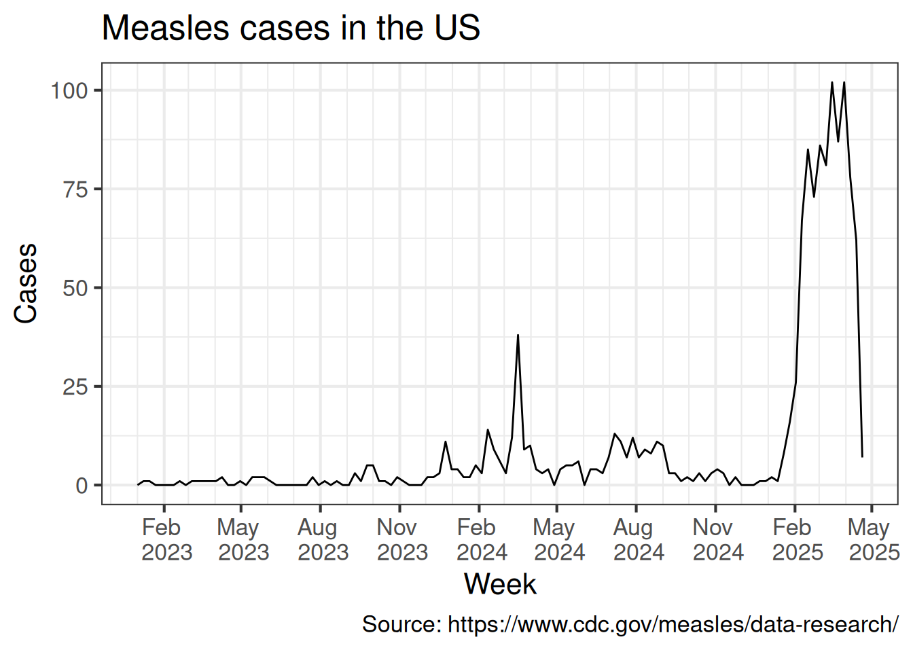

This report aims to provide an estimate of the actual number of measles cases in the US using the datasets provided by the Center for Diseases Control (CDC).
Estimation is needed because there are delays on the notification process ehich is an usual issue in real-time epidemiological surveillance. These delays can be caused by several things, for instance the time from the symptoms onset to look after a hospital is already a source of delay, but there is also a time to confirm the case in a lab, there is also a time between the case been fully identified and the CDC become aware of that case. As an example, a measles case identified today whose symptoms onset occur one week ago could be officially reported to CDC only next week, so this example carries one week delay due to the time of the patient look after a health facility, then there is some time to the case be confirmed (clinically or laboratory tested), then this case must be reported into a system that certainly varies from region to region, and finally the CDC is informed about the existence of this case. Obviously this process should be as fast as possible, but we have to accept that there are several sources of delay. Hence, a delay correction method is needed.
Such delays may impact on a real-time analysis of the disease dynamics. For instance, when an analyst look at the number of cases by the time of symptoms onset, which is the correct thing to do because it is the date closer to the infection date, the most recent data is always truncated. This gives an impression that the number of cases are reducing but the number of cases may be under represented because of reporting delays.
It is important to clarify at the most recent periods this under representation is in theory the same as the under notification, but there is an important difference. The under representation due to delays will be reported and eventually be fully known. And in the under notification the cases are lost and will never be known. In the delay correction we are not dealing with under notification.
The aim here is to organize the data, apply some statistical methods to correct the delays and visualize the total reported cases given by the observed cases added by the estimated number of cases the occurred but have not been reported yet. This correction is called Nowcasting.
Since end of February 2025, the in the United States releases every Friday, among other data, the weekly number of measles cases by rash onset date (https://www.cdc.gov/measles/data-research/index.html), Since then I downloaded every Friday the most up-to-date dataset with measles counts and save it in the data folder. Figure 1 presents the number of measles cases in the US. The year of 2025 presents an large increase in the cases compared with the previous two years.

Figure 1: Reported measles cases by rash onset week in the US since 2023.
Delay correction model
The delay correction is based on the chain-ladder model described (and extended) in (Bastos et al. 2019) implemented in the nowcaster R package (Lopes and Bastos 2025). Let \(Y_{t,d}\) be the number of measles cases at week \(t\), \(t=1,2,\ldots,T\), delayed by \(d\) weeks, \(d=0,1,2,\ldots,D_{max}\). The Bayesian chain-ladder model is given by \[Y_{t,d} \sim NegBin(\lambda_{t,d}, \phi), \qquad \lambda_{t,d}>0, \quad \phi>0.\] And the expected number of the cases can decomposed by time and delay random effects as the following \[\log(\lambda_{t,d}) = \alpha + \beta_t + \gamma_d.\]
The number of cases by week are given by \[Y_t = \sum_{d=0}^{D_{max}}Y_{t,d}, \qquad t=1,2,\ldots,T.\] However, all \(Y_{t,d}\) for \(t+d>T\) are cases that occur but have not been reported yet. Those cases will be estimated from the posterior predictive \[f(\{y_{t,d: t+d > T}\}|\{y_{t,d: t+d\leq T}\}).\]
Samples from this distribution can be obtained and Monte Carlo estimates for the weekly cases can be calculated, called here as the nowcasting. More details of the method can be found in (Bastos et al. 2019).
Results
There is a pattern of a reduction in the number of cases at the most up-to-date weeks for each dataset. Figure 2 presents dataset released weekly by in the CDC website from weeks 7 to 14. In order to illustrate the delays lets take the calendar week 7, starting on 2025-02-16 and ending on 2025-02-22, as an example. The number of measles cases at calendar week 7 reported at the same week 7 was 12, one week later the number of cases at calendar week 7 were updated and increased to 57 measles cases, then on week 9 it went up to 74, then 82 on week 10, and the numbers were updated in each new release ending up to 85 measles cases at week 7 reported on week 14. This pattern is similar on different calendar weeks. So we try to learn about the delay pattern taking into account the disease dynamics on the statistical model previously described.
Figure 2: All released data for the reported measles cases by rash onset week in the US.
The data is prepared to predict the cases that occur but have not been reported yet using the nowcaster package. A Monte Carlo sample is saved.
Code
# Data preparingtime.tbl <-tibble(dt_time =seq(DT_trunc, max(measles$week_start), 7)) |>rowid_to_column(var ="time")# Time of the first datasetb = time.tbl$time [ time.tbl$dt_time ==min(measles$dt_week_release) ] # Time of the last datasetB =max(time.tbl$time) measles.aux <- measles |>filter(week_start >= DT_trunc) |>mutate(delay =as.numeric(dt_week_release - week_start) /7 ) |>left_join(time.tbl, by =c("week_start"="dt_time")) |>mutate(TD = time + delay) |>select(week_start, time, delay, Nt_td = cases, TD)measles.aux2 <- measles |>filter(week_start >= DT_trunc) |>mutate(delay =as.numeric(dt_week_release - week_start) /7 ) |>left_join(time.tbl, by =c("week_start"="dt_time")) |># To make the dataset match TD = time + delay + 1 and TD.prev = time + delay (TD = TD.prev+1) mutate(TD = time + delay +1) |>select(week_start, Nt_tdm1 = cases, TD)measles.delay <- measles.aux |>left_join(measles.aux2) |>mutate(Y = Nt_td - Nt_tdm1) |>select(week_start, time, delay, Y) |>filter(delay !=0) |>bind_rows( measles |>mutate(delay =as.numeric(dt_week_release - week_start) /7 ) |>left_join(time.tbl, by =c("week_start"="dt_time")) |>filter(delay==0) |>select(week_start, time, delay, Y=cases) ) |>arrange(time, delay) |>filter(time + delay > b, delay <= Dmax) # Filling NAs for predictionmeasles.NA <-tibble(time =rep((b+1):B,Dmax), delay =rep(1:Dmax,each=Dmax), Y =NA) |>filter(time+delay > B) |>left_join(time.tbl, by ="time") |>rename( "week_start"="dt_time") measles.inla <- measles.delay |>mutate(Y =ifelse(Y<0,0,Y)) |>bind_rows(measles.NA) |>rename("Time"="time", "dt_event"="week_start")# Runing the nowcasting modelout <-nowcasting_no_age(dataset = measles.inla)# Saving the Monte Carlo samplesmeasles.now <-nowcasting.summary(out, age = F)
The corrected time series is then presented in Figure 3 and
Figure 3: Reported measles cases by rash onset week in the US since 2023 with nowcasting and its uncertainty.
Figure 4: Reported measles cases by rash onset week in the US in 2025 with nowcasting and its uncertainty.
Drawbacks
Correcting the delays for the whole country assumes that the estimated disease dynamics, the temporal component, is the same in the whole country which is not true because the current outbreak is concentrated in the state of Texas, so the nowcasting that would better estimate the disease dynamics should be performed at least by state or similar regions. A spatial delay correction model was proposed in (Bastos et al. 2019). We are also assuming that the delay pattern does not depend on calendar time nor space which may be a strong assumption.
Conclusion
Delays are intrinsic characteristics of the real-time epidemiological surveillance and analysts should either ignore the most up-to-date information or try to correct the delays using a statistical method. The chain-ladder method is an efficient method to correct delays in this context and can be used alone of together with other methods to provide decision makers with useful information for act to avoid or mitigate disease outbreaks.
References
Bastos, Leonardo S, Theodoros Economou, Marcelo F C Gomes, Daniel A M Villela, Flavio C Coelho, Oswaldo G Cruz, Oliver Stoner, Trevor Bailey, and Claudia T Codeço. 2019. “A Modelling Approach for Correcting Reporting Delays in Disease Surveillance Data.”Statistics in Medicine 38 (22): 4363–77. https://doi.org/10.1002/sim.8303.
---title: "Measles in the US, 2025"author: "Leo Bastos (PROCC/Fiocruz and IMPA tech)"format: html: code-copy: true code-fold: true code-tools: truebibliography: references.bib---## IntroductionThis report aims to provide an estimate of the actual number of measles cases in the US using the datasets provided by the [Center for Diseases Control](https://www.cdc.gov) (CDC).Estimation is needed because there are delays on the notification process ehich is an usual issue in real-time epidemiological surveillance. These delays can be caused by several things, for instance the time from the symptoms onset to look after a hospital is already a source of delay, but there is also a time to confirm the case in a lab, there is also a time between the case been fully identified and the CDC become aware of that case. As an example, a measles case identified today whose symptoms onset occur one week ago could be officially reported to CDC only next week, so this example carries one week delay due to the time of the patient look after a health facility, then there is some time to the case be confirmed (clinically or laboratory tested), then this case must be reported into a system that certainly varies from region to region, and finally the CDC is informed about the existence of this case. Obviously this process should be as fast as possible, but we have to accept that there are several sources of delay. Hence, a delay correction method is needed.Such delays may impact on a real-time analysis of the disease dynamics. For instance, when an analyst look at the number of cases by the time of symptoms onset, which is the correct thing to do because it is the date closer to the infection date, the most recent data is always truncated. This gives an impression that the number of cases are reducing but the number of cases may be under represented because of reporting delays.It is important to clarify at the most recent periods this under representation is in theory the same as the under notification, but there is an important difference. The under representation due to delays will be reported and eventually be fully known. And in the under notification the cases are lost and will never be known. In the delay correction we are not dealing with under notification.The aim here is to organize the data, apply some statistical methods to correct the delays and visualize the total reported cases given by the observed cases added by the estimated number of cases the occurred but have not been reported yet. This correction is called **Nowcasting**.## Data```{r}#| message: false#| warning: falselibrary(tidyverse)library(nowcaster) # https://covid19br.github.io/nowcaster/# Getting file names files <-list.files("../data/", pattern="*.csv", full.names=TRUE)measles <-lapply( files, vroom::vroom) |>bind_rows(.id ="a") |>group_by(a) |>mutate(dt_week_release =max(week_start) ) |>ungroup() |>select(-a)```Since end of February 2025, the in the United States releases every Friday, among other data, the weekly number of measles cases by rash onset date (<https://www.cdc.gov/measles/data-research/index.html>), Since then I downloaded every Friday the most up-to-date dataset with measles counts and save it in the [data folder](../data). @fig-measles presents the number of measles cases in the US. The year of 2025 presents an large increase in the cases compared with the previous two years. ```{r}#| label: fig-measles#| echo: false#| fig-cap: "Reported measles cases by rash onset week in the US since 2023."#| warning: false# Maximum delay size (Dmax) Dmax <-diff(range(measles$dt_week_release)) |>as.numeric() /7# Start of the week of the last datasetDT_last_B <-max(measles$dt_week_release) measles |>filter(dt_week_release == DT_last_B) |>ggplot(aes(x = week_start, y = cases)) +geom_line() +scale_x_date(date_breaks ="3 months", date_labels ="%b \n %Y", minor_breaks ="months") +# scale_x_date(date_breaks = "years", date_labels = "%Y", minor_breaks = "weeks") +# scale_color_manual(values = 1:length(files), labels = paste("Week",7 + 1:length(files))) + labs(title ="Measles cases in the US",x ="Week",y ="Cases",# color = "Data release date",caption ="Source: https://www.cdc.gov/measles/data-research/", ) +theme_bw( base_size =16) +theme(legend.position ="inside", legend.position.inside =c(0.2, 0.75))```## Delay correction modelThe delay correction is based on the chain-ladder model described (and extended) in [@bastos2019] implemented in the nowcaster R package [@nowcaster]. Let $Y_{t,d}$ be the number of measles cases at week $t$, $t=1,2,\ldots,T$, delayed by $d$ weeks, $d=0,1,2,\ldots,D_{max}$. The Bayesian chain-ladder model is given by $$Y_{t,d} \sim NegBin(\lambda_{t,d}, \phi), \qquad \lambda_{t,d}>0, \quad \phi>0.$$ And the expected number of the cases can decomposed by time and delay random effects as the following $$\log(\lambda_{t,d}) = \alpha + \beta_t + \gamma_d.$$The number of cases by week are given by $$Y_t = \sum_{d=0}^{D_{max}}Y_{t,d}, \qquad t=1,2,\ldots,T.$$ However, all $Y_{t,d}$ for $t+d>T$ are cases that occur but have not been reported yet. Those cases will be estimated from the posterior predictive $$f(\{y_{t,d: t+d > T}\}|\{y_{t,d: t+d\leq T}\}).$$Samples from this distribution can be obtained and Monte Carlo estimates for the weekly cases can be calculated, called here as the nowcasting. More details of the method can be found in [@bastos2019].## ResultsThere is a pattern of a reduction in the number of cases at the most up-to-date weeks for each dataset. @fig-measles25 presents dataset released weekly by in the CDC website from weeks 7 to 14. In order to illustrate the delays lets take the calendar week 7, starting on 2025-02-16 and ending on 2025-02-22, as an example. The number of measles cases at calendar week 7 reported at the same week 7 was 12, one week later the number of cases at calendar week 7 were updated and increased to 57 measles cases, then on week 9 it went up to 74, then 82 on week 10, and the numbers were updated in each new release ending up to 85 measles cases at week 7 reported on week 14. This pattern is similar on different calendar weeks. So we try to learn about the delay pattern taking into account the disease dynamics on the statistical model previously described.```{r}#| label: fig-measles25#| echo: false#| fig-cap: "All released data for the reported measles cases by rash onset week in the US."#| warning: false# Minimum date to be considered. Information before is useless for calculate the delayDT_trunc <-min(measles$dt_week_release) - Dmax *7measles |>filter(week_start >= DT_trunc) |>mutate(week_release =factor(week(dt_week_release), ordered = T) ) |>ggplot(aes(x = week_start, y = cases, group = week_release, color = week_release )) +geom_line() +scale_x_date(date_breaks ="week", date_labels ="%U") +# scale_color_manual(values = 1:length(files), labels = paste("Week",7 + 1:length(files))) + labs(title ="Measles cases in the US",x ="Week",y ="Cases",color ="Week of data release",caption ="Source: https://www.cdc.gov/measles/data-research/", ) +theme_bw( base_size =16) +theme(legend.position ="inside", legend.position.inside =c(0.2, 0.6),legend.background =element_rect(fill =NA))```The data is prepared to predict the cases that occur but have not been reported yet using the nowcaster package. A Monte Carlo sample is saved.```{r}#| echo: true#| message: false#| warning: false# Data preparingtime.tbl <-tibble(dt_time =seq(DT_trunc, max(measles$week_start), 7)) |>rowid_to_column(var ="time")# Time of the first datasetb = time.tbl$time [ time.tbl$dt_time ==min(measles$dt_week_release) ] # Time of the last datasetB =max(time.tbl$time) measles.aux <- measles |>filter(week_start >= DT_trunc) |>mutate(delay =as.numeric(dt_week_release - week_start) /7 ) |>left_join(time.tbl, by =c("week_start"="dt_time")) |>mutate(TD = time + delay) |>select(week_start, time, delay, Nt_td = cases, TD)measles.aux2 <- measles |>filter(week_start >= DT_trunc) |>mutate(delay =as.numeric(dt_week_release - week_start) /7 ) |>left_join(time.tbl, by =c("week_start"="dt_time")) |># To make the dataset match TD = time + delay + 1 and TD.prev = time + delay (TD = TD.prev+1) mutate(TD = time + delay +1) |>select(week_start, Nt_tdm1 = cases, TD)measles.delay <- measles.aux |>left_join(measles.aux2) |>mutate(Y = Nt_td - Nt_tdm1) |>select(week_start, time, delay, Y) |>filter(delay !=0) |>bind_rows( measles |>mutate(delay =as.numeric(dt_week_release - week_start) /7 ) |>left_join(time.tbl, by =c("week_start"="dt_time")) |>filter(delay==0) |>select(week_start, time, delay, Y=cases) ) |>arrange(time, delay) |>filter(time + delay > b, delay <= Dmax) # Filling NAs for predictionmeasles.NA <-tibble(time =rep((b+1):B,Dmax), delay =rep(1:Dmax,each=Dmax), Y =NA) |>filter(time+delay > B) |>left_join(time.tbl, by ="time") |>rename( "week_start"="dt_time") measles.inla <- measles.delay |>mutate(Y =ifelse(Y<0,0,Y)) |>bind_rows(measles.NA) |>rename("Time"="time", "dt_event"="week_start")# Runing the nowcasting modelout <-nowcasting_no_age(dataset = measles.inla)# Saving the Monte Carlo samplesmeasles.now <-nowcasting.summary(out, age = F)```The corrected time series is then presented in @fig-measles.now and```{r}#| label: fig-measles.now#| echo: false#| fig-cap: "Reported measles cases by rash onset week in the US since 2023 with nowcasting and its uncertainty."#| warning: falsemeasles |>filter(dt_week_release == DT_last_B) |>ggplot(aes(x = week_start, y = cases, )) +geom_ribbon(data = measles.now$total, mapping =aes(x = dt_event, y = Median, ymin = LI, ymax = LS,fill ="95% CI"), alpha =0.25) +geom_ribbon(data = measles.now$total, mapping =aes(x = dt_event, y = Median, ymin = LIb, ymax = LSb,fill ="50% CI"), alpha =0.5) +geom_line(aes(colour ="Reported")) +geom_line(data = measles.now$total, mapping =aes(x = dt_event, y = Median, colour ="Estimated (Nowcasting)")) +# scale_x_date(date_breaks = "week", date_labels = "%U") +scale_x_date(date_breaks ="10 weeks", date_labels ="%U/%y") +scale_color_manual(values =c( "red", "black")) +scale_fill_manual(values =c("red", "red")) +labs(title ="Measles cases in the US",# subtitle = "@lsbastos",x ="Week/year",y ="Cases",caption ="Source: https://www.cdc.gov/measles/data-research/", fill ="",colour ="Measles cases" ) +theme_bw( base_size =16) +theme(legend.position ="inside", legend.position.inside =c(0.25, 0.60),legend.background =element_rect(fill =NA))``````{r}#| label: fig-measles.nowB#| echo: false#| fig-cap: "Reported measles cases by rash onset week in the US in 2025 with nowcasting and its uncertainty."#| warning: falsemeasles |>filter(dt_week_release == DT_last_B, year(week_start) ==2025) |>ggplot(aes(x = week_start, y = cases, )) +geom_ribbon(data = measles.now$total, mapping =aes(x = dt_event, y = Median, ymin = LI, ymax = LS,fill ="95% CI"), alpha =0.25) +geom_ribbon(data = measles.now$total, mapping =aes(x = dt_event, y = Median, ymin = LIb, ymax = LSb,fill ="50% CI"), alpha =0.5) +geom_line(aes(colour ="Reported")) +geom_line(data = measles.now$total, mapping =aes(x = dt_event, y = Median, colour ="Estimated (Nowcasting)")) +scale_x_date(date_breaks ="week", date_labels ="%U") +scale_color_manual(values =c( "red", "black")) +scale_fill_manual(values =c("red", "red")) +labs(title ="Measles cases in the US, 2025",x ="Week",y ="Cases",caption ="Source: https://www.cdc.gov/measles/data-research/", fill ="",colour ="Measles cases" ) +theme_bw( base_size =16) +theme(legend.position ="inside", legend.position.inside =c(0.2, 0.70),legend.background =element_rect(fill =NA))```## DrawbacksCorrecting the delays for the whole country assumes that the estimated disease dynamics, the temporal component, is the same in the whole country which is not true because the current outbreak is concentrated in the state of Texas, so the nowcasting that would better estimate the disease dynamics should be performed at least by state or similar regions. A spatial delay correction model was proposed in [@bastos2019]. We are also assuming that the delay pattern does not depend on calendar time nor space which may be a strong assumption.## ConclusionDelays are intrinsic characteristics of the real-time epidemiological surveillance and analysts should either ignore the most up-to-date information or try to correct the delays using a statistical method. The chain-ladder method is an efficient method to correct delays in this context and can be used alone of together with other methods to provide decision makers with useful information for act to avoid or mitigate disease outbreaks.